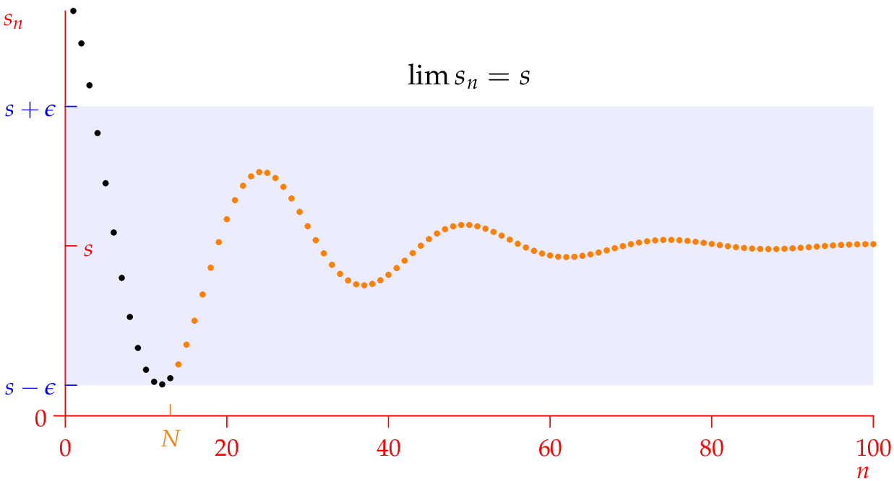

Limit Definition

\(\forall \epsilon>0, \exists N\) such that \(n>N\implies |s_n-s|<\epsilon\)
As \(\textcolor{blue}{\epsilon}\) gets smaller, we must choose \(\textcolor{orange}{N}\) larger so that the distance from all terms in the tail \(\textcolor{orange}{n>N}\) to the limit \(\textcolor{red}{s}\) is less than \(\textcolor{blue}{\epsilon}\).